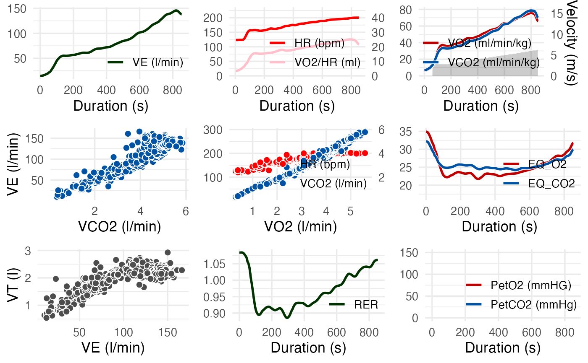
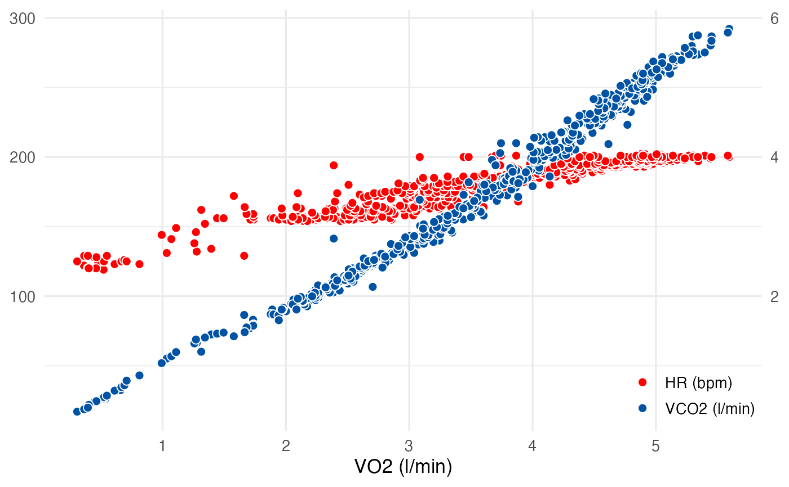

spiro_plot() returns a ggplot2 graph visualizing
data from cardiopulmonary exercise testing.
Arguments
- data
A
data.frameof the classspiro, as it is generated byspiro.- which
A numeric integer setting the plot panels to be displayed. The panels are numbered in the order of the traditional Wasserman 9-Panel Plot:
1: VE over time
2: HR and oxygen pulse over time
3: VO2, VCO2 and load over time
4: VE over VCO2
5: V-Slope: HR and VCO2 over VO2
6: EQVO2 and EQVCO2 over time
7: VT over VE
8: RER over time
9: PetO2 and PetCO2 over time
- smooth
Parameter giving the filter methods for smoothing the data. Default is
fzfor a zero lag Butterworth filter. Seespiro_smoothfor more details and other filter methods (e.g. time based averages),- base_size
An integer controlling the base size of the plots (in pts).
- ...
Arguments passed to ggplot2::theme() to modify the appearance of the plots.
Details
This function provides a shortcut for visualizing spiroergometric data from
spiro with the help of ggplot2.
Examples
# Import and process example data
ramp_data <- spiro(
file = spiro_example("zan_ramp"),
hr_file = spiro_example("hr_ramp.tcx")
)
# Diplay the traditional Wasserman 9-Panel Plot
spiro_plot(ramp_data)

# Display selected panels, here V-Slope
spiro_plot(ramp_data, which = 5)
